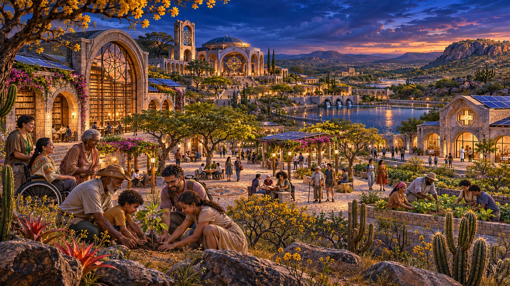
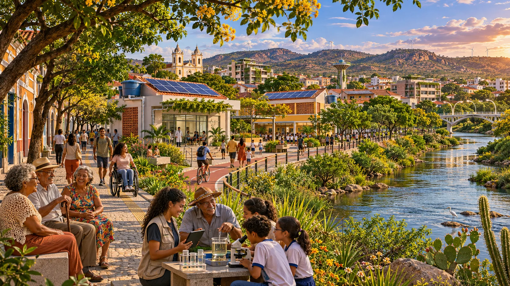
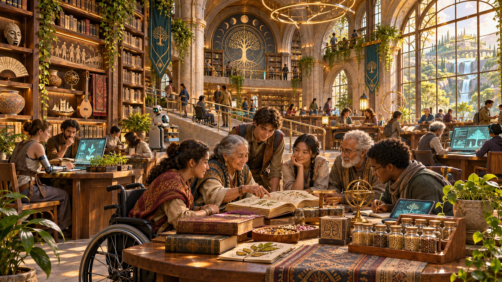

Riscos podem se reforçar.
O IPCC descreve riscos compostos e em cascata. Calor, água, energia e saúde precisam ser pensados como dependências de um mesmo sistema.
IPCC · síntese de 2023
Entre a aceleração tecnológica e as crises do planeta, o que precisamos proteger? A vida. A liberdade de pensar. A memória. E a capacidade de cuidar uns dos outros.
O acervo de 12 temas continua disponível. Esta edição acrescenta clima, cuidado, autonomia, memória e resiliência local.
O IPCC descreve riscos compostos e em cascata. Calor, água, energia e saúde precisam ser pensados como dependências de um mesmo sistema.
IPCC · síntese de 2023O Pacto Digital Global propõe cooperação e direitos humanos no ambiente digital. O NIST organiza a gestão de riscos da inteligência artificial.
ONU · 2024 · NIST · 2023A UNESCO trata da preservação e do acesso ao patrimônio documental. A OMS oferece uma base para instalações de saúde resilientes ao clima.
UNESCO · 2015 · OMS · 2024Leitura do projeto: a humanidade se preserva com redes de cuidado, instituições confiáveis, diversidade e capacidade de aprender. Síntese editorial inspirada nas fontes, sem promessa de refúgio invulnerável.
Escolha um cenário e um horizonte. As imagens são interpretações artísticas; os anos são marcos de planejamento do projeto.

Cenário condicional · arte gerada por IASe instituições, comunidades e tecnologia trabalharem com transparência e continuidade, o ganho técnico pode apoiar o cuidado, a educação e a recuperação ambiental.
Neste cenário, os primeiros núcleos locais poderiam testar oficinas de autonomia digital, preservação de arquivos e rotinas de continuidade. O avanço seria demonstrado por testes e registros, não por anúncios.
Método: fontes → dependências → condições explícitas → sinais para revisão → ações reversíveis. Não há modelo quantitativo, ranking de países ou probabilidade de colapso nesta ampliação.
Na obra de Aldenir Rocha, a magia branca existe para salvar, guardar e preservar a humanidade. A Fortaleza Digital dramatiza a perda de autonomia e de vínculos.
Preservar a humanidade é preservar também a possibilidade de ser humano.
Esta expansão propõe espaços imaginários abertos de cuidado, aprendizagem e memória. No mundo real, inspira projetos civis sujeitos a conhecimento técnico, consentimento e avaliação.
Conhecer o mundo e seu pacto
Cânone preservado: Clínica, Emergência e Intensiva continuam as Casas fundadoras. As seis estruturas abaixo são Frentes de Preservação propostas em 23/11/2026. Não substituem as Casas nem ratificam harmonizações pendentes.
Conecta as Casas fundadoras. Na narrativa, protege a Chama Vital. Na prática proposta, inspira educação e continuidade assistencial.
Prova de avanço: contingência testada.Protege meios de subsistência. A ponte prática é mapear vulnerabilidades e buscar apoio técnico para água, solo e segurança alimentar.
Prova de avanço: diagnóstico com responsável.Preserva bibliotecas, histórias e saberes. Cópias independentes, direitos definidos e testes de restauração tornam a memória recuperável.
Prova de avanço: arquivo restaurado.A Oclumência inspira limites e privacidade. A proposta prática inclui verificação de conteúdo, atendimento presencial e decisões contestáveis.
Prova de avanço: alternativa demonstrada.Fortalece cooperação entre gerações. Regras públicas, revisão de decisões e canais de reclamação limitam a concentração de poder.
Prova de avanço: decisão registrada.Guarda a vida além da nossa espécie. Valoriza Caatinga, recuperação de solo e saberes locais com participação comunitária.
Prova de avanço: resultado ecológico medido.Proteção universal. Cuidado, abrigo, educação e dignidade não dependem de renda, diploma, corpo, religião ou habilidade digital. Princípio proposto para a aplicação civil.
Liberdade e consentimento. Participar, discordar e sair precisam ser escolhas reais. Fé e ficção inspiram significado; proteção física depende de meios comprováveis.
Uma proposta local começa por conhecer o território e ouvir quem vive nele. Esta edição não confirma núcleo, parceria ou instalação.
Começar por uma biblioteca recuperável, uma oficina e um diagnóstico de dependências permite aprender com evidências.
O Ceará dispõe de um plano estadual de combate à desertificação. A existência da política é referência para diálogo; não comprova execução em local específico.
PAE-CE · registro institucional de 2026| Preservar | Indicador | Situação |
|---|---|---|
| Continuidade do cuidado | Tempo de recuperação em exercício documentado | Sem dados locais verificados |
| Autonomia digital | Alternativas e revisão humana demonstradas | Sem dados locais verificados |
| Memória | Arquivos com restauração e integridade conferidas | Sem dados locais verificados |
| Ecossistemas | Qualidade ecológica e sobrevivência acompanhadas | Sem dados locais verificados |
Roteiro proposto. Nenhuma etapa é concluída automaticamente. Comece por uma ação de baixo custo.
Escolher um piloto, registrar escopo e responsável, revisar o cânone com o autor e inventariar um acervo sem dados pessoais.
Entrega sugerida: ficha de uma página e teste de restauração de um arquivo.
Se houver voluntários e condições, realizar uma oficina acessível e um exercício de continuidade autorizado. Registrar o que funcionou e o que falhou.
Entrega sugerida: registro consentido, resultados e correções.
Avaliar utilidade, custos, acessibilidade e governança. Ampliar o que tiver responsáveis, recursos e resultados demonstrados.
Entrega sugerida: relatório público com limites, despesas e decisões.
Marque apenas ações realizadas. Com JavaScript ativo, as marcações ficam neste navegador. Elas não confirmam execução institucional.
0 de 5 ações marcadas neste navegador
Exportação em texto Markdown. Nenhum envio a terceiros.
As páginas anteriores preservam seus recortes e referências. A nova edição não revalida integralmente todas as afirmações antigas.
Página inicial de 17/11/2026, com tese, sentinelas e documentação.
Abrir o recorte anteriorIA, China, dados, Europa, Brasil, chips, espaço, nuclear e poder militar.
Consultar os dossiêsRelações entre temas, códigos e desfechos. Pesos são julgamento editorial.
Explorar o mapaDocumento de base com data de corte própria e fontes.
Ler a base históricaCadeias causais e projeções de 2031, 2036 e 2046 sob as premissas originais.
Ler a análiseParadoxos, recursos e escolhas coletivas: o preço do medo.
Consultar o ensaioFontes consultadas em 23/11/2026. Os cenários e a organização do Realmetaverso são construções editoriais do projeto.
Compêndio Integral Reametaverso 360X (81 páginas) e Compêndio Integral Realmetaverso 360X v3 — Edição Integrada de 17/11/2026 (75 páginas).
V3: pp. 7–8 (harmonizações e Casas), 11–12 (universo), 15–16 (Carteira e ética), 60–64 (expansão literária). O novo conteúdo permanece proposta para revisão do autor.
Erros a evitar: tratar cenários como profecias; chamar imagem de infraestrutura existente; contar planos como entregas; medir dignidade por mérito ou corpo; confundir simbolismo com proteção física comprovada.